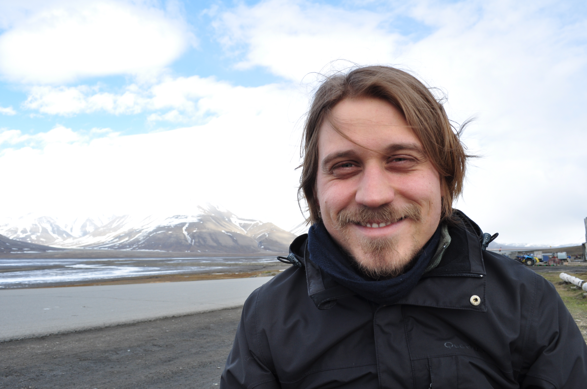

About me
I am a microbiologist specialized in the study of polar microbial communities. My research focuses mostly on the use of molecular ecology methods such as metagenomics and metatranscriptomics to explore the diversity and functional capabilities of microbial communities across the polar regions. I have a MSc degree in Cellular and Molecular Biology from the Federal University of Rio Grande do Sul (UFRGS, Brazil), and a PhD in Sciences from the University of Liège (Belgium). I am currently a Postdoctoral Researcher at the University of Helsinki (Finland).
I have been fascinated by the Polar Regions since my undergraduate studies in Brazil. Even now, it is surprising how little we know about the microbial communities living in cold environments, especially if we acknowledge their vital contribution to global climate and biogeochemical cycles. I first started working with polar microbial communities in my MSc studies. Under the supervision of Dr. Alexandre Macedo from the Laboratory of Biofilms and Microbial Diversity (UFRGS, Brazil), I investigated the functional and taxonomic diversity of microbial communities in soil, water and snow from King George Island, Antarctic Peninsula. After obtaining my MSc degree, I decided to continue my studies abroad. My PhD studies were carried out in the Cyanobacteria group (University of Liège, Belgium) under the supervision of Dr. Annick Wilmotte, and focused on the use of high-throughput amplicon sequencing to study the diversity and ecology of polar cyanobacteria. I am now living in Helsinki, Finland, where I am working as a Postdoctoral Researcher in the Arctic Microbial Ecology group of the University of Helsinki led by Dr. Jenni Hultman. You can read about my research here.
Although science and other types of empirical knowledge are crucial for understanding and mitigating the damages we are causing to our planet and the lives of its inhabitants, I strongly believe that our future depends on radical changes to our economic, societal, and political systems. The current economic system adopted by the so-called "developed countries" of the Global North is inneficient, destructive, and unsustainable. At the same time, the environmental, societal, and political damages caused by this exploitative system are most felt by those living in the Global South. That is why I believe that the only way forward is through a radical change on how we interact with each other and the environment.